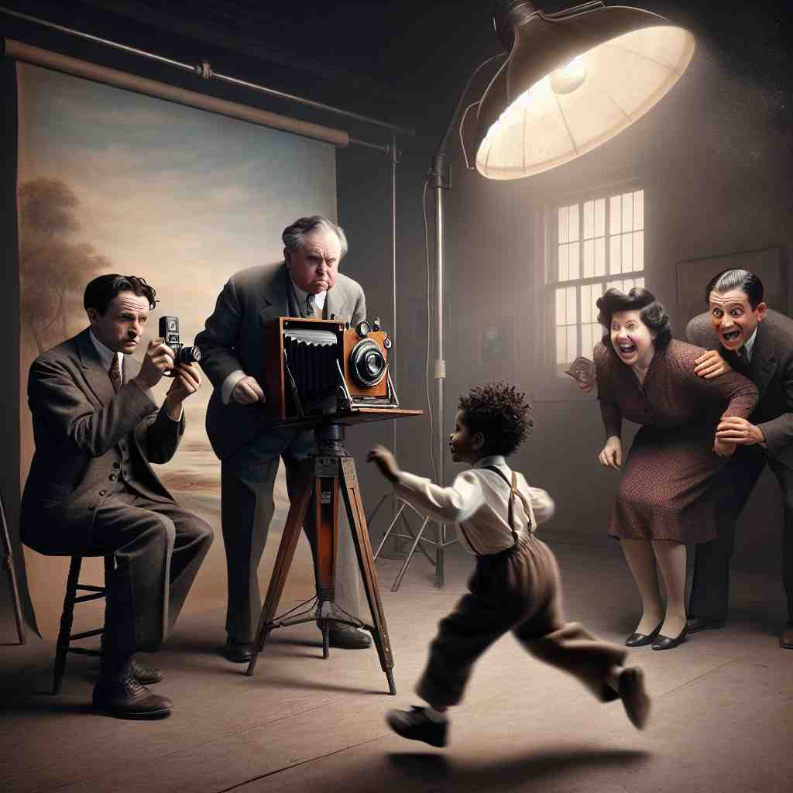

🗝️ adj./adv. not moving or making a sound
🖼️ 在一个宁静的森林里，一只鹿站在小溪边，一动不动，周围的树叶微微摇曳，显得格外安静。这一刻，时间仿佛凝固了，完美诠释了'still'的含义：静止不动，毫无声响。
🔍 'Still' 的核心含义是'静止不动'。想象一个完全静止的场景，这种静止状态可以延伸到时间（仍在继续）、态度（尽管如此）、行为（使平静）等方面。even 使用'静止'的电影画面（still）来记忆各种含义，你会发现它们都与'不变'或'静止'有关，这样可以更容易理解和记忆这个词的多重用法。

💬 The lake has still water, making it a perfect place to kayak.

💬 The girl loves to stay still in the garden and enjoy the beauty of nature.

💬 The photographer asked the child to stay still for the picture.
💬 The boat floated on the still water at dawn.
🌳 单词 'still' 本身是一个独立的词，没有明显的词根、前缀或后缀。它在英语言中有多种用法，可以作为形容词、副词或名词，表示 '静止的'、'仍然' 或 '寂静'。
🗝️ adv. continuing to happen; ongoing
🖼️ 在一个繁忙的工厂车间，机器依然在运作，工人们来来往往，即便已经是夜深，生产仍然持续着，象征着'still'的含义：持续不断，正在发生。
💬 He is still working on the project.
❓ 状态保持不变，如同静止
🗝️ adv. even; nevertheless
🖼️ 在一个激烈的辩论中，一位发言者提出了有力的论点。尽管他的对手已经澄清了诸多异议，他仍坚持道：'Still，我们不能忽视这些事实。'这表达了'still'作为'然而，尽管如此'的用法。
💬 Although he was tired, he still went to the gym.
❓ 观点或行为保持不变，如同静止
🗝️ v. to make or become calm or quiet
🖼️ 在一个喧嚣的市场中，一位母亲轻声地哄着她哭泣的孩子，用温柔的语气逐渐让他安静下来，这就是'still'作为使安静或平静的动词形态。
💬 The mother stilled her crying baby.
❓ 使某物或某人进入静止状态
🗝️ n. a device used for distilling alcoholic drinks
🖼️ 在一间传统蒸馏室里，铜制蒸馏器静静地矗立在角落，缓缓地蒸馏出醇香的酒液，展现了'still'作为蒸馏设备的用途。
💬 The whiskey was produced in a copper still.
❓ 蒸馏过程中液体表面保持静止
🗝️ n. a single image from a film or video
🖼️ 在摄影棚中，导演指着一张剧照说：'这就是电影中的精彩瞬间。'展示了'still'作为电影或视频中的单帧图像。
💬 The director chose a dramatic still for the movie poster.
❓ 电影中的静止画面